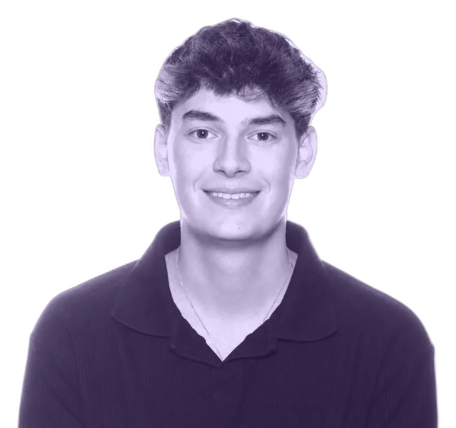
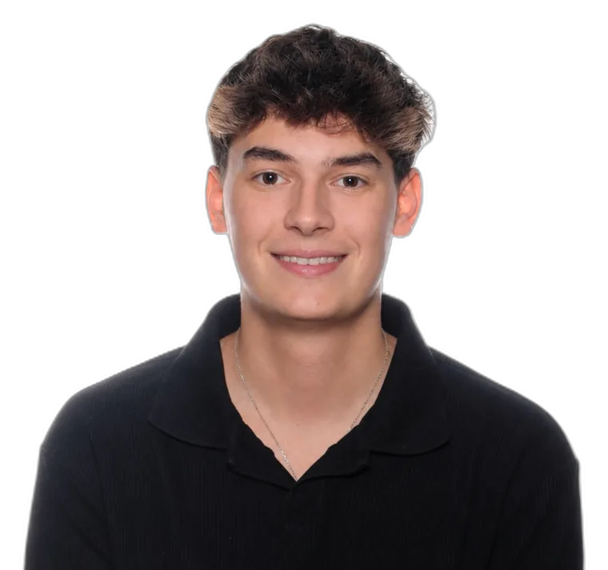

AI Project Manager
I lead AI for a franchisor with four brands (YogaOne, BDiR, Glow Pilates and OneDir). I decide what to automate, build it, and get it adopted: marketing automation, AI tools and internal systems.
I build AI systems that end up in production: agents, ML pipelines and the infrastructure under them. AI & Data Science student from Barcelona, this semester in New York.


Running the AI department of a fitness franchise group, on my own.
I lead AI for a franchisor with four brands (YogaOne, BDiR, Glow Pilates and OneDir). I decide what to automate, build it, and get it adopted: marketing automation, AI tools and internal systems.
A Python and FastAPI app that generates on-brand marketing images with the OpenAI and Anthropic APIs. Designed it multi-tenant for about 80 franchise centres, with each centre's API keys kept in Azure Key Vault, and shipped it on Azure App Service.
Leads from Meta Ads land in Zoho CRM automatically, tagged by brand and routed to the right area manager. No more spreadsheets passed around by hand.
A Power Automate agent that drafts social posts and image prompts for each brand from a shared knowledge base, so centres get consistent content without a designer in the loop.
A machine learning tool that tells marketing whether a Meta campaign and the leads it brings in are actually working, plus automated monthly reports for other departments.
University projects I'm proud of. Each one taught me something I now use at work.
Multimodal deception detection
An outfit recommender that explains itself
A decentralised network of processes, in C
Management software for an optical shop, in Java
Handwritten digits with nothing but NumPy
BSc in Artificial Intelligence and Data Science, on the mathematical methods track.
Electrical and Computer Engineering courses as an exchange student.